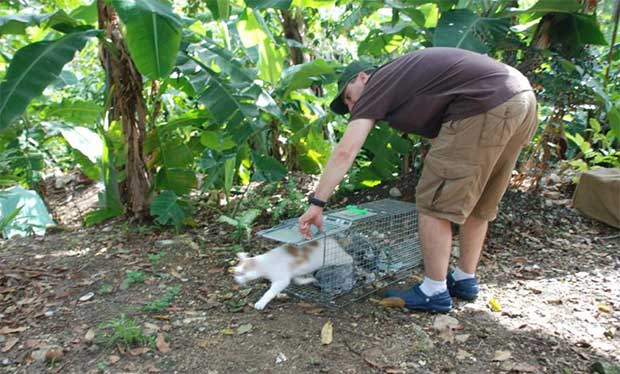

Stray Cat Solutions
Cat Cafe Program
Hotels often complain about being overrun by stray cats. It’s a dilemma, because the food attracts them, and keeps them coming. Even if you manage to remove all the cats, more will miraculously appear, so simply taking them away is not a long-term solution.
Large numbers of cats, particularly if they look unhealthy, can be a source of concern for both staff and guests. But help is at hand. The Cat Cafe Program offers a humane solution, which will both improve your hotel’s image, and make your guests’ stay more enjoyable.
International Spay/Neuter Network (ISNN) is prepared to trap, sterilize and deworm the stray cats on your property. Each one will be ear-tipped before release, for easy future identification, and we will make return visits, as necessary, to look after any new additions to the colony. In other words, you won’t have a population explosion.

In exchange for this service, we ask that you donate rooms for the volunteer veterinarians and technicians who participate in our Community Spay/Neuter Clinics throughout the year.
In order to keep the cats happy and away from your guest areas, we will show you how to build a shelter for them, and give you tips on supplying food and water. Some hotels even implement a guest feeding program, where visitors can participate in serving food at the Cat Cafe, and this has been well received.
You don’t have to be a hotel to benefit from our program. We are available to assist anyone who has a problem with stray cats, as long as you are able to make a donation (monetary or in-kind) to help us cover costs.
To find out more about Cat Cafes, please contact us.